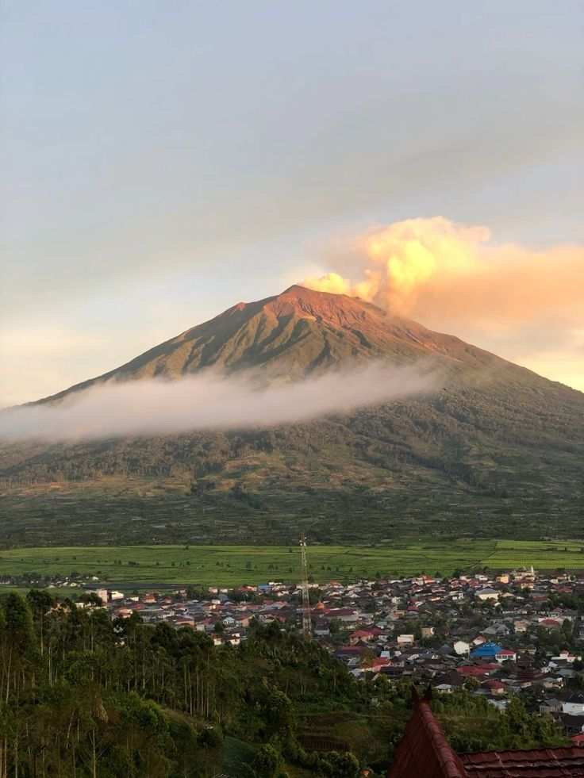
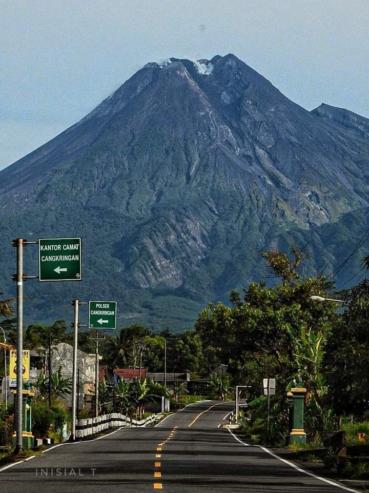
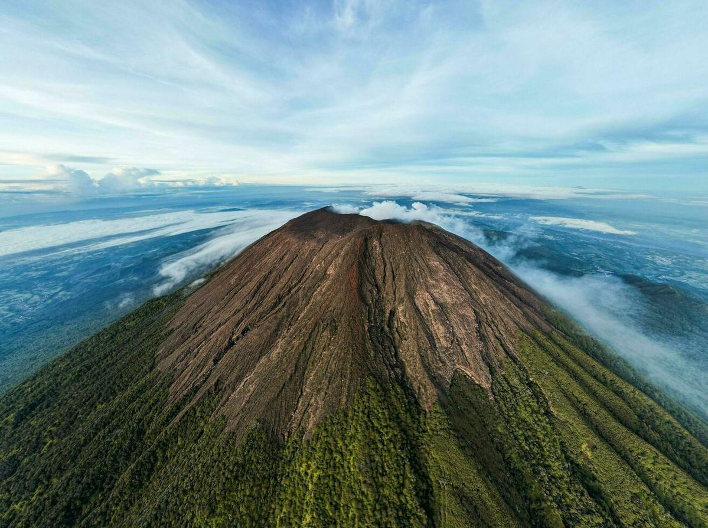
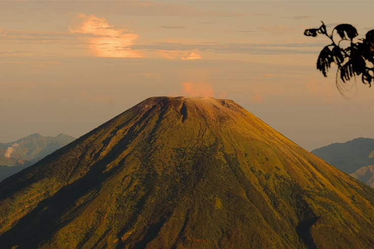
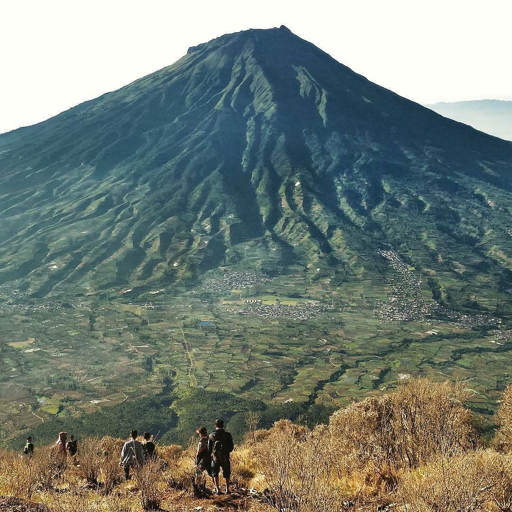
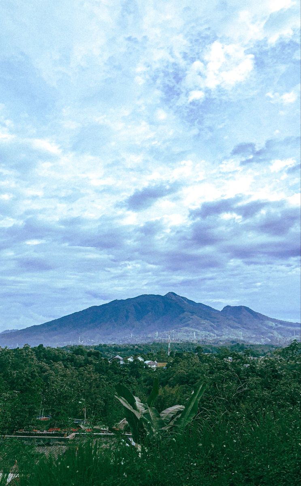

Selamat Datang di E-Jateng Adventure!
Jawa Tengah dianugerahi jajaran gunung berapi aktif maupun non-aktif yang menawarkan panorama alam luar biasa. Website ini dirancang khusus untuk membantu para pendaki—baik pemula maupun profesional—untuk menemukan informasi lengkap mengenai jalur pendakian, keindahan, serta persiapan logistik sebelum menjelajahi atap-atap Jawa Tengah.
Rekomendasi Destinasi Gunung Jawa Tengah
1. Gunung Merbabu (3.142 MDPL)

Gunung Merbabu terkenal dengan keindahan sabana hijaunya yang membentang luas. Memiliki beberapa jalur populer yang menyajikan pemandangan matahari terbit dengan latar belakang Gunung Merapi.
Daftar Basecamp Resmi: Basecamp Selo (Boyolali), Basecamp Suwanting (Magelang), Basecamp Wekas (Magelang), Basecamp Cuntel (Semarang), dan Basecamp Thekelan (Semarang).
Pelajari selengkapnya di Situs Resmi TN Gunung Merbabu →
2. Gunung Lawu (3.265 MDPL)

Terletak di perbatasan Jawa Tengah dan Jawa Timur, Gunung Lawu menyimpan nilai sejarah dan spiritual yang kental dengan keberadaan candi-candi purbakala di lerengnya. Di dekat puncaknya, terdapat warung tertinggi di Indonesia yang legendaris, yaitu Warung Mbok Yem.
Daftar Basecamp Resmi: Basecamp Candi Cetho (Karanganyar), Basecamp Cemoro Kandang (Karanganyar), Basecamp Cemoro Sewu (Magetan - Batas Provinsi), dan Basecamp Singolangu (Magetan).
3. Gunung Merapi (2.911 MDPL)

Gunung Merapi merupakan salah satu gunung berapi paling aktif di dunia. Meskipun jalur pendakian ke puncak sering kali dibatasi demi keselamatan, pesona kawasan lerengnya menyajikan pemandangan sisa-sisa jalur aliran lava yang sangat memukau.
Daftar Basecamp Resmi: Basecamp New Selo (Boyolali) dan Basecamp Sapuangin (Klaten).
4. Gunung Slamet (3.432 MDPL)

Menjadi atap Jawa Tengah sekaligus gunung tertinggi kedua di Pulau Jawa. Gunung Slamet terkenal dengan jalurnya yang menantang, menembus hutan tropis lebat, dan medan berbatu terjal (Plawangan) sesaat sebelum mencapai puncak kawahnya yang luas.
Daftar Basecamp Resmi: Basecamp Bambangan (Purbalingga), Basecamp Guci (Tegal), Basecamp Dipajaya (Pemalang), Basecamp Kaliwadas (Brebes), dan Basecamp Baturraden (Banyumas).
5. Gunung Sindoro (3.136 MDPL)

Gunung Sindoro berdiri kokoh berdampingan dengan kembarannya, Gunung Sumbing. Karakteristik jalurnya menawarkan trek yang tersusun rapi dengan bonus hamparan bunga edelweiss yang cantik serta kawah aktif yang mengeluarkan asap solfatara di puncaknya.
Daftar Basecamp Resmi: Basecamp Kledung (Temanggung), Basecamp Alang-alang Ombo (Wonosobo), Basecamp Bansari (Temanggung), dan Basecamp Sigedang (Wonosobo).
6. Gunung Sumbing (3.371 MDPL)

Gunung tertinggi ketiga di Pulau Jawa ini menawarkan jalur fisik yang menantang. Puncak Sumbing memiliki keunikan berupa sabana rumput yang luas, kawah segoro wedi, serta tebing-tebing batu yang menjulang megah menantang adrenalin para pendaki.
Daftar Basecamp Resmi: Basecamp Garung (Wonosobo), Basecamp Bowongso (Wonosobo), Basecamp Cepit (Temanggung), Basecamp Mangli Kaliangkrik (Magelang), dan Basecamp Banaran (Temanggung).
7. Gunung Ungaran (2.050 MDPL)

Terletak tidak jauh dari Kota Semarang, Gunung Ungaran menjadi pilihan favorit pendaki santai dan pemula karena jalurnya yang relatif landai, melewati perkebunan teh yang asri serta area hutan pinus yang sangat cocok digunakan untuk berkemah.
Daftar Basecamp Resmi: Basecamp Mawar (Jimbaran, Semarang), Basecamp Perantunan (Bandungan, Semarang), dan Basecamp Promasan (Kendal).
Tabel Estimasi Waktu & Informasi Gunung
Berikut adalah tabel acuan durasi pendakian standar untuk membantu perencanaan manajemen waktu perjalanan Anda:
| Nama Gunung | Jalur Populer | Estimasi Naik | Tingkat Kesulitan |
|---|---|---|---|
| Gunung Merbabu | Selo (Boyolali) | 6 - 7 Jam | Sedang |
| Gunung Lawu | Candi Cetho | 7 - 8 Jam | Sedang |
| Gunung Merapi | Selo (Sampai Pasar Bubrah) | 4 - 5 Jam | Sedang - Berat |
| Gunung Slamet | Bambangan | 8 - 10 Jam | Sulit / Berat |
| Gunung Sindoro | Kledung | 5 - 6 Jam | Sedang |
| Gunung Sumbing | Garung | 7 - 8 Jam | Sedang - Sulit |
| Gunung Ungaran | Basecamp Mawar | 3 - 4 Jam | Mudah (Pemula) |
Fitur Tambahan: Form Registrasi Pendakian Online (Simulasi)
Untuk mematuhi kuota pendakian, silakan isi formulir rencana pendakian di bawah ini: